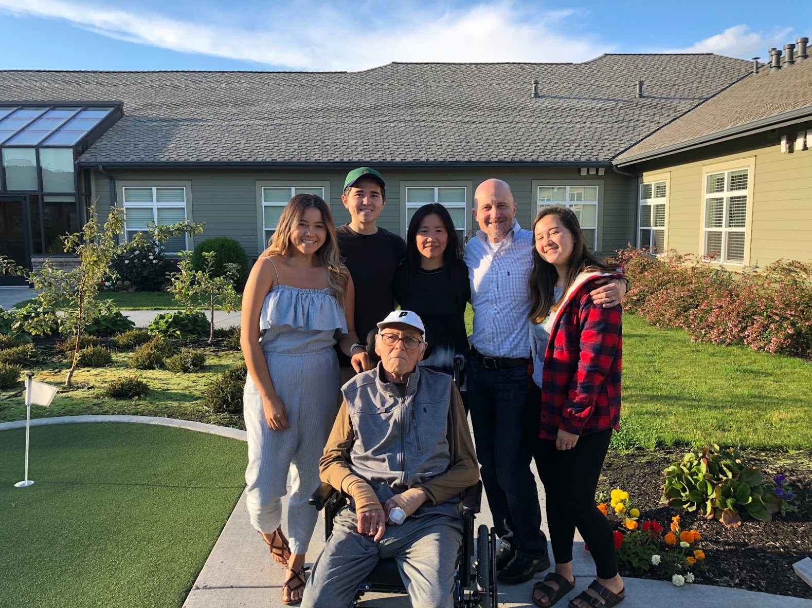

Intro: What is Dementia?

Dementia is an umbrella term that describes a group of symptoms
associated with memory loss and cognitive decline that is severe
enough to reduce a person's ability to function (alz.org). The two most common types
of dementia are vascular dementia and Alzheimer's disease, with Alzheimer's
affecting over 5.8 million Americans in 2019
(Facts and Figures).
The effects of dementia are severe. Alzheimer's disease is the 6th leading
cause of death in the United States, with 1 in 3 seniors dying from Alzheimer's
or another form of dementia. In addition, Alzheimer’s and other
dementia-related illnesses will cost the country $290 billion in 2019.
These dementia-related diseases pose a threat to people everywhere and
are a major health issue that must be addressed.
My personal interest in the topic of dementia comes from the way it has
affected my family. On November 6, 2018, my grandfather passed away
at the age of 83. He suffered from vascular dementia, a form of
dementia where blood vessels in the brain are damaged and brain tissue
is injured, depriving brain cells of vital oxygen and nutrients
(Vascular Dementia).
I hope that a cure can be found through medicinal or biomedical means so that
no families have to deal with the grief, frustration, and confusion that only get worse
as the disease progresses.
Biological Mechanisms

Dementia/Alzheimer's is caused by a combination of genetic,
lifestyle and environmental factors that affect the brain over time.
The exact causes of the disease are not fully understood, but we do
know that it involves the malfunctioning of certain brain proteins. These
malfunctioning proteins damage neurons in the brain, starting in the temporal
lobe of the brain which is the region that controls memory
(Alzheimer's disease).
The loss of neurons spreads to other regions of the brain, eventually causing
the brain to shrink by the late stages of the disease, as shown in the GIF above.

Alzheimer's is primarily caused by the malfunctioning of two brain proteins,
being beta-amyloid and tau. When leftover fragments of beta-amyloid cluster
together in groups, they form amyloid plaques that disrupt communication
between cells (Alzheimer's disease).
Tau proteins play an important role in transporting nutrients
and other materials for neurons, but in Alzheimer's disease, they change shape
to form structures known as neurofibrillary tangles. These tangles
disrupt the transport system.
There is currently no cure for dementia. It is an extremely complex
disease that is caused by multiple diseases so it is unlikely that
there will be a single cure (Dementia guide).
The current research being done is focused on finding cures to the most common
dementia-related diseases, being Alzheimer's disease and vascular dementia.
The application of bioengineering in the treatment of dementia-related diseases
is very limited, as most treatments have not been approved by the FDA. As a result,
the majority of treatment options require the ingestion of prescription drugs.
However, bioengineering plays a huge role in the prevention (as opposed to treatment)
of dementia, specifically through machine learning. I explain the role ML plays,
as well as what ML is, in the next two tabs.
What is Machine Learning?

Machine learning is a popular topic within the field of computer science
that is utilized in many different industries to address/ameliorate the
various issues that society faces. In particular, machine learning is an
application of artificial intelligence (AI) that allows systems to improve
upon a given process, and effectively "learn," through iteration
and the use of large data sets.
(What is Machine Learning?).
Since its conception (and especially in recent years), its use has become
widespread across all industries.
Machine Learning v. AI v. Deep Learning
If you have heard of machine learning before, you might have it confused with
artificial intelligence (AI) or Deep Learning. All three fields derive from
AI, which is the encapsulating category that machine learning and deep learning
fall under.

Put simply:
AI enables computers to mimic human behavior, Machine Learning is a subset of AI
that enables computers solve problems using data without being explicity programmed,
and Deep Learning is a subset of Machine Learning that is similar to ML, but
enables computers to solve even more complex problems
(What's the Difference Between AI, Machine Learning, and Deep Learning?).
Machine Learning v. Dementia

There have been many efforts to prevent and identify the onset of dementia through
machine learning algorithms.
Researchers in South Korea have developed a machine learning model,
using MRI scans of cortical thickness, to predict whether a given patient
will be likely develop Alzheimer's disease
(Novel Machine Learning Algorithm Predicts the Development of Alzheimer's Disease)
By conducting high-resolution MRI scans with 3-D volumetric
imaging on 869 cognitively normal individuals and 473 patients
with probable Alzheimer's disease, researchers can better assess the cortical
atrophy patterns of their patients. The method has been validated in two longitudinal
cohorts, where associations between cortical atrophy and the disease was observed
at baseline, at a one-year follow-up, and at a three-year follow-up.
Another machine learning model involving Alzheimer's disease was
introduced earlier this year, called sparse high-order interaction
model with rejection option (SHIMR). Using a decision tree, long rules, short rules,
and a large data set from the Alzheimer’s Disease Neuroimaging Initiative, SHIMR
has been shown to be an accurate method for diagnosing Alzheimer's. More importantly,
it is a cost-effective diagnosis method, reducing the sometimes overwhelming
financial burden of medical diagnosis
(An interpretable machine learning model for diagnosis of Alzheimer's disease)

Patients undergo an initial screening using inexpensive and easily
accessible biomarkers, being blood plasma. Patients who are difficult to diagnosis
(hence “Rejected: R” by SHIMR) are recommended for a more expensive screening
(Using cerebrospinal fluid).
Current Outlook

Although the outlook for curing dementia does not seem promising,
we have made significant progress in recent years. With the application
of engineering techniques like machine learning, we have been able to better
assess dementia-related diseases at all stages. Additionally, using ML allows us
to better identify the early signs and symptoms of the disease.

We are even getting closer to treatments of dementia that are bioengineered.
Recently, the first biomedical device to treat Alzheimer's was up for approval
by the FDA. The NeuroAD machine is a device that treats Alzheimer's by generating
an electric current inside a patient’s brain while the patient engages in cognitive
training tasks. The FDA decided not to approve its use in the US, even though it
has already been approved for medical use in Israel and Europe.
Despite this device not meeting the FDA's standards, we are getting closer to a device
that can, and thus, closer to a bioengineering a solution for dementia. As technology
progresses and more research is conducted, we will continue to learn more about this
neurodegenerative disease, and one day, hopefully end dementia for good.